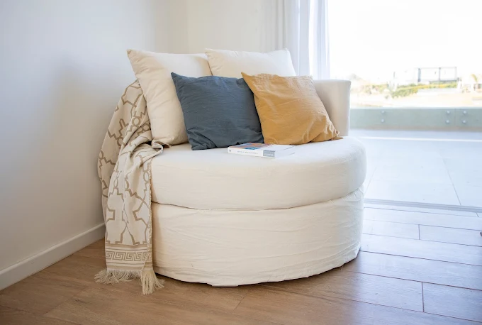
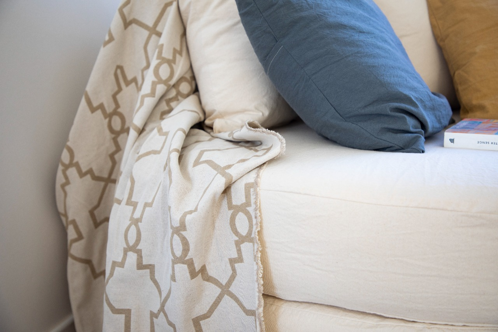
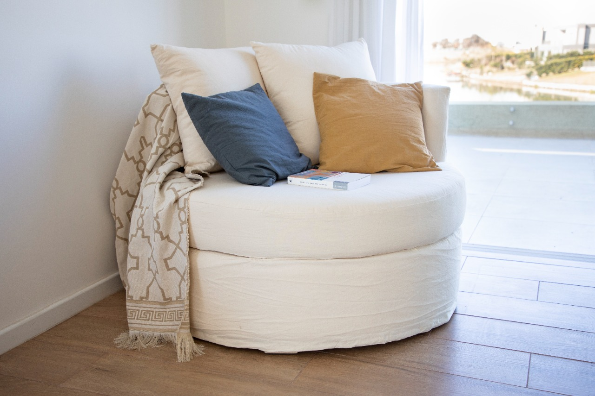
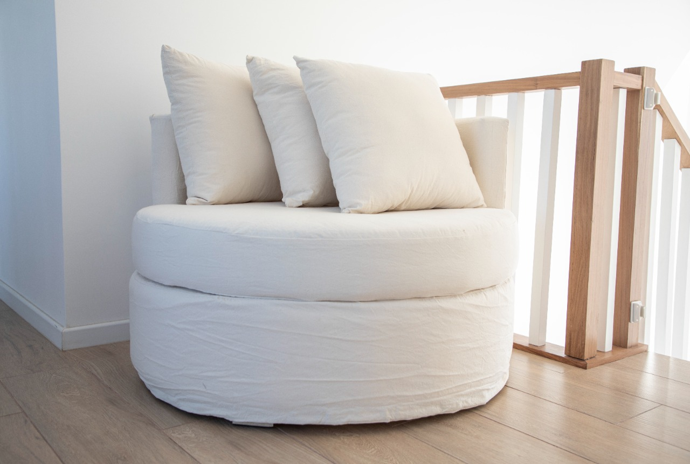

Sillón Circus
Sillón circular y envolvente de diseño. Una pieza icónica que transforma cualquier rincón en un espacio de confort y descanso.

Sillón circular y envolvente de diseño. Una pieza icónica que transforma cualquier rincón en un espacio de confort y descanso.

Disponible en 110 y 120 cm de diámetro. La medida perfecta para relajarse solo o disfrutar de a dos.

Confeccionado con placa de espuma soft de alta densidad. Suavidad al tacto y firmeza que mantiene su forma y brinda un confort superior.

Nuestras fundas en tusor son 100% aptas para lavarropas. Estética impecable y practicidad para el uso diario.
Fabricación directa en Don Torcuato. Consultanos por medidas, telas y disponibilidad del Sillón Circus.
WHATSAPP DIRECTO